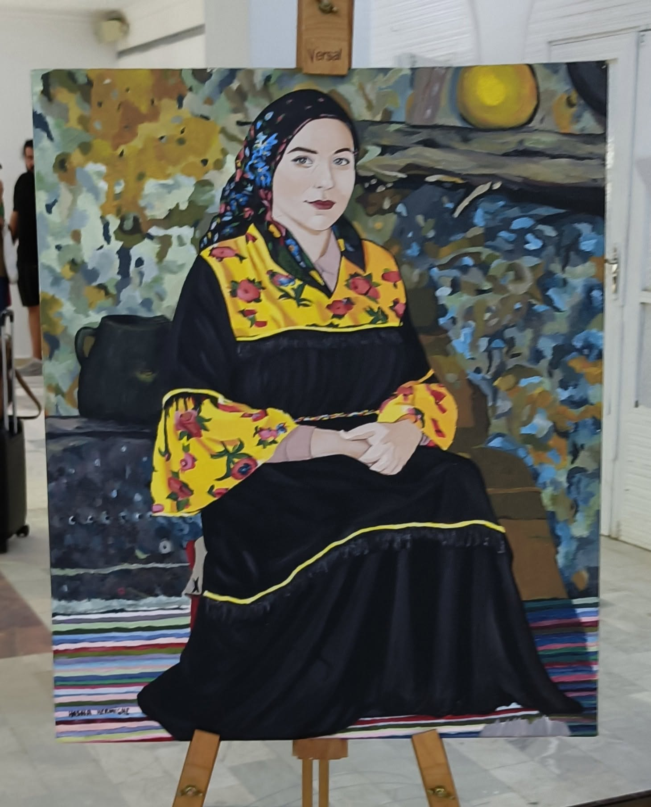

Femme au châle fleuri
Assise
dans le calme du jour,
Elle garde au regard
la mémoire des saisons.
Ses mains croisées
portent les récits
De la terre,
du pain,
des matins sans fard.
Son châle noir
abrite la patience,
Mais l’éclat jaune,
tissé de fleurs rouges,
Raconte la lumière
qu’elle cache encore,
Sous la pudeur tranquille
de sa pose.
Autour d’elle,
les couleurs s’éveillent,
Comme un jardin
qui se souvient d’elle.
Les feuilles,
les fruits,
les ombres du foyer
Chuchotent son nom
dans la peinture.
Elle ne parle pas,
mais tout en elle dit :
« J’ai connu le vent,
la pluie,
la joie simple.
Je suis la gardienne
des gestes anciens,
Et dans mon silence,
je veille le monde. »
Djamel Metref
At Yenni le 20 octobre 2025
Portrait © Hosna Kermiche

← Tous les poèmes